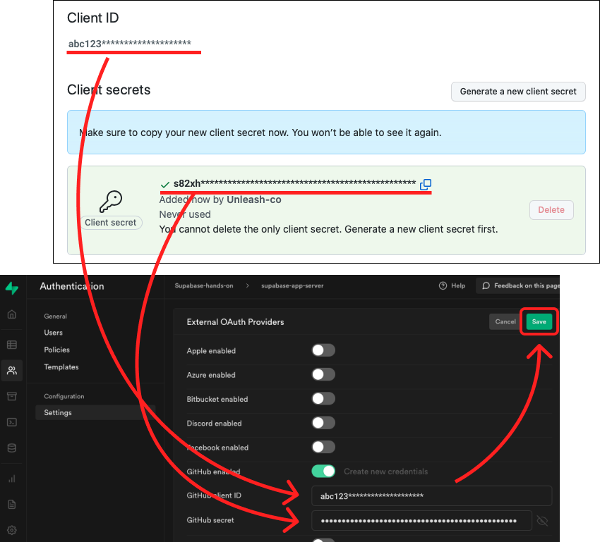

５．Github ログインの構築
✅ Supabase 側 の設定
① Supabase から Github を開く
- Authentication をクリック
- Setting
- Github enabled をオン
- Create new credentials をクリック
② 必要な３つの情報を入力 → Register application をクリック。
| No | 項目 | 解説 |
|---|---|---|
| 1 | Application name | 任意 |
| 2 | Homepage URL | yarn dev で開いたページの URL をペースト。 |
| 3 | Authorization callback URL | .env.local の NEXT_PUBLIC_SUPABASE_URL に記載した URL に、/auth/v1/callback を付けて入力。 |
☝ すべて入力できたら、Register Application をクリック。
③ Generate a new client secret をクリック → Github のキーを作成
☝ クリック後に、Github のパスワードを入力する場合もあります。

④ Client ID と Client secrets を、 Supabase に貼り付け
☝ 入力後は、Save ボタンを忘れずに！

✅ フロント(Next.js)の設定
Gitpod を開き、作業をしていきましょう。
① src → pages → index.tsx を開いてください。

② 37 行目にある、以下のコードのコメントを解除してください。
// Githubログインボタンのクリック時
const handleClick = async () => {
await supabase.auth.signIn({ provider: "github" });
};
③ yarn build → yarn start をしてください。
④ 保存をして、Sign in with Github をクリック

⑤ 認証確認画面が開きますので、Authorize ... をクリック
⑤ プロフィール入力画面が表示されば成功！